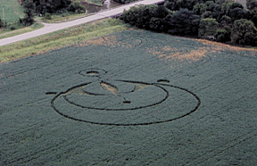
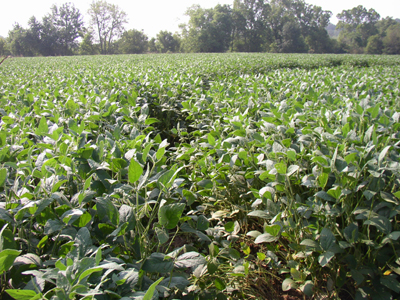
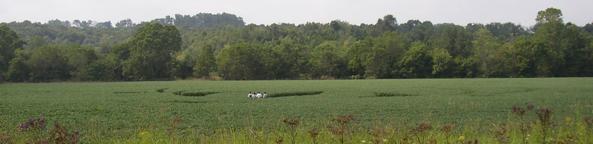
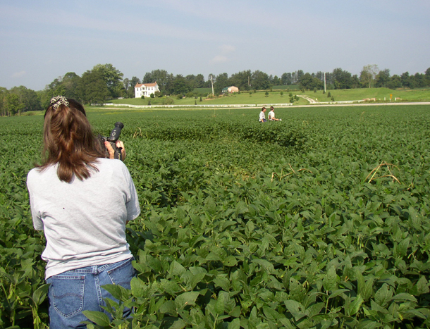
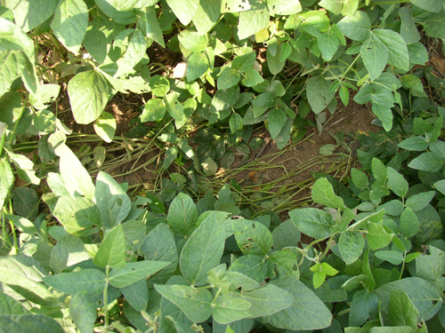
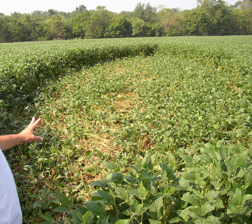
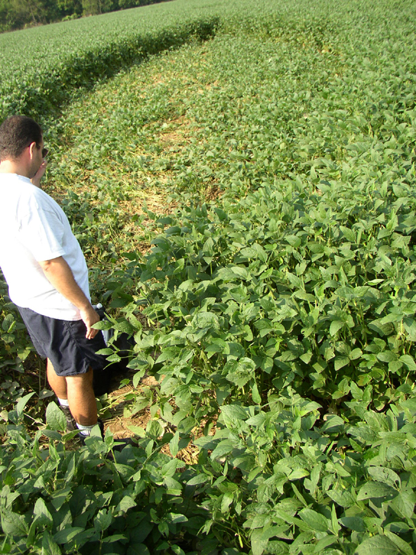

OHIO CROP FORMATION
at legendary SERPENT MOUND
Also near site of alleged UFO sightingThis morning I had visited a mysterious 'crop formation' that hasrecently been found in a portion of Southern Ohio -the exact location Iwill not disclose out of respect for the continuing investigation and alsoas per request by a neighboring resident and possible owner of the property;who has stated that she doesn't want "a convention of UFO nutcases destroyingall her soybeans." NOTE: A week after this report was prepared, the location
of the formation (Serpent Mound) was released by The
People's Defender Newspaper, see below The large formation, an oval shaped flattened area accompanied by severalprojecting 'spikes' that arch around it, is in a field of soybean - whichis a rare crop for a formation to appear in. Already working the site atthe time of my arrival was Jeffrey Wilson and two others, Roger and Ted.Apparently Roger had already overflown the site earlier this morning andhas obtained aerial photos.It is unclear how news of this formation has spread so rapidly, havingjust heard of it myself late last night from telephone advisement by NancyTalbott of BLT Research, Cambridge, Massachusettes. I found it difficult to negotiate through the field as the standingcrop was midway between waste and shoulder-length in places, one tendsto raise his or her arms above their head to plod their way through thefield. This, plus the tortuous conditions due to the recent heat causedme to wonder how anyone could 'make' this formation. Of course I am nospecialist in crop circles and am aware that just about anything can bedone, but I can add that the nearby resident who I spoke with declaredfirmly that there had been "absolutely nobody in that field at all" andhas no idea how the formation came to be. From the road and even standing near the formation, I had no realappreciation for it. Upon looking at the notes, diagrams and measurementsmade by Jeffrey Wilson, I could then appreciate this formation and howit might look from the air. I will look forward to reading his report onthis formation at https://www.cropcirclenews.com , and Wilson informed thathe is utilizing 2-GPS units in his investigation. As I was leaving, carswere pulling up and numerous other folks were arriving on the scene, manyof them with cameras and tripods. I had a perception that there was a gooddeal more 'activity' taking place than should have been and was hopingall this business would not impede or distract Wilson's investigation. This formation has appeared within less than 30-miles of Hillsboro,Ohio, and there are early indications that the formation was first spottedlast Sunday, August 24, 2003. This Hillsboro, Ohio location is of significance due to an ongoinginvestigation by MUFON's Donnie Blessing of a UFO sighting there on Friday,August 22. The UFO was described as having rotating white lights. Donniehas interviewed the primary claimant and has also made inquiries with arealaw enforcement regarding this UFO complaint. I talked with Donnie by telephonethis afternoon and she agrees that the location of the sighting and thecrop formation is interesting and Donnie also advises that her report onthe Hillsboro, Ohio UFO sighting is pending, and will be posted at https://home.fuse.net/ufowhen complete. I have ground-level photos of the formation taken with my digitalcamera and I will make them available online at https://home.fuse.net/ufo, check the site for updates. FILED,
FRIDAY, AUGUST 29, 2003
KENNY YOUNG | 
Credit for these aerial photos of the Serpent MoundCrop
Formation is due to MARK TOLLE for
The People's DefenderNewspaper,
West Union, OHIO (Adams County)


Field Photos by CINDY PORTER
SEE BELOW FOR MORE PHOTOS by Cindy Porter |

"YOURS TRULY" at Crop Formation



"EARLY DRAFT" NOTES OF FORMATION


As per official notice by Jeffrey Wilson, the word is now 'out' regardingthe location of the Ohio formation. Many will take special interest thatthis formation has appeared opposite of Ohio's famous 'Serpent Mound' inAdams County. Enclosed below is a newspaper article from the People's Defenderof West Union, Ohio. - ky
Thu, Sep 04, 2003 04:15 AM
Aliens or hoax: crop circles appear in Peebles soybeanfield
By TROY JOLLY AND CALEB GROOMS
The People's Defender: West Union, OH
A strange design found in a soybean field across from the entrance toSerpent Mound on State Route 73 near Locust Grove remains under investigation.The design was found on the property of Molly Williams, a resident of Dayton.
The design, designated as a crop circle, was first seen by Delsey Knoechelman,of Peebles, on Sunday, Aug. 24 around 11 a.m. Knoechelman stated that thecreation was not there on Saturday as she inspected the fields in the areafor flood damage. She returned to her home where she contacted the AdamsCounty Sheriff's office and then returned to the site with family. Knoechelman'sfather, Jim McKenzie, inspected the site with a metal detector, where hefound several different metallic levels and minerals in the outlining circle.According to McKenzie, one circle had higher concentrated levels of mineralsthan did the others.
Jeff Wilson, an independent crop circle investigator from Dexter, Mich.,documented slightly higher radiation levels inside the design, as wellas slightly higher electrical and magnetic fields than those outside ofthe marking. The plants inside the cirles have been swirled to the groundand have sustained heat damage. According to Wilson, it is more difficultto analyze markings such as the ones found at the site because there haveonly been an estimated 10 reported markings in soybeans in the United States.
"I obligated myself to not release the location of the markings," saidWilson. He did however share his personal feelings about the markings found."Based on plant damage, it is my belief that the design in this field isauthentic."
Douglas McIlwain, president of the American Society of Dowsers, reportedabnormality in the field. "I believe the design is pointing towards SerpentMound, either to the head or tail of the effigy," said McIlwain.
Wilson, McIlwain and Roger Sugden, of Ft. Wayne, Ind., analyzed thefield, taking with them crop and soil samples. The findings have not beenreturned. However, they did note that there were no tracks leading to themarking.
The design consists of several markings. The smaller circles on thesides of the design measure 12' in diameter with the larger bottom circlemeasuring 16'. The total design measures 300' in diameter.
David Garvin, of West Union, said, "The markings in the crop and tailof Serpent Mound are similar."
According to the Adams County Sheriff's office, there was no unusualactivity reported on the morning of Aug. 24.
"Anyone caught on the property will be charged with trespassing andmay be arrested," said deputy Shawn Cooley.
History shows that very few crop circles have been made in soybeans.The majority of markings have been found in vegetable crops, corn fields,grass, wheat, and even groves of trees.
This isn't first questionable event in the county. It was reported inThe People's Defender that on the evening of Oct. 17, 1973, three AdamsCounty deputies and one West Union Police officer encountered an unusualobject in the sky on Chaparral Road in West Union and later hovering betweenState Route 41 and 125 near Panhandle. The men described the object ashaving pulsating red, green, blue and white lights and claimed it would"zig-zag in a very tight circle" throughout the sky. Highland, Ross andScioto County deputies also reported seeing the object.
In relation to the most recent happening, McIlwain reported that eye-witnesseshave encountered "earth lights" since the design was found. These orange,glowing spheres measure five feet in diameter and are common after cropcircles have been formed.
A final report of the findings of the investigation is due to be releasedin October. Anyone discovering additional field circles or markings isencouraged to contact Wilson. He can be reached at (734) 891-2689 or jwilson10369@comcast.net.
END OF ARTICLE
RETURN TO MAIN PAGE
UFO RESEARCH